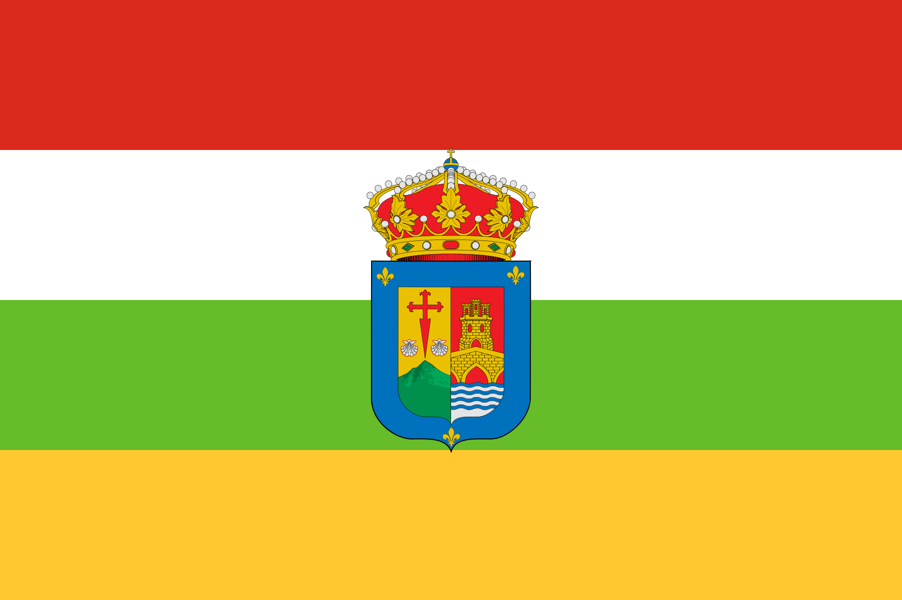

¿Quién soy?
¡Buena pregunta! Como ya sabrás, mi nombre en línea es Kiwisin. Nací en el magnífico estado de Ohio, EE.UU. Sí, lo has leído correctamente. Soy estadounidense. Entonces, ¿qué hago aquí hablando español en una página web con los colores de la bandera española? Te cuento, ¿vale?
¿Por qué hablo español?
Mi padre es español (de La Rioja) y mi madre es estadounidense. ¡Respondida! Bueno, aún no. El español no es mi lengua materna. De hecho, llevo toda la vida hablando inglés. No fue hasta 2020 que empecé a aprender español porque mi padre no me lo enseñó.
|

La bandera de La Rioja, España. Qué hermosa, ¿no?
|
Un paisaje glorioso de la mejor tierra del mundo.
|
Mis planes para el futuro
Estaría superguay mudarme a España, pero no estoy seguro de ello ahora mismo. No tengo todo el dinero del mundo para viajar. Además, necesito un trabajo para conseguir pasta y vivir en otro país. He pensado en trabajar en la informática, pero ya veremos. Ahora voy a la universidad y he elegido el camino de la informática, aunque a veces tengo mis dudas.
Tal vez un día de estos viaje a España para ver si es el lugar para mí. ¿Y si no lo es? Bueno, tampoco es el fin del mundo. Si tengo que vivir aquí en los EE.UU. toda la vida, entonces que así sea.